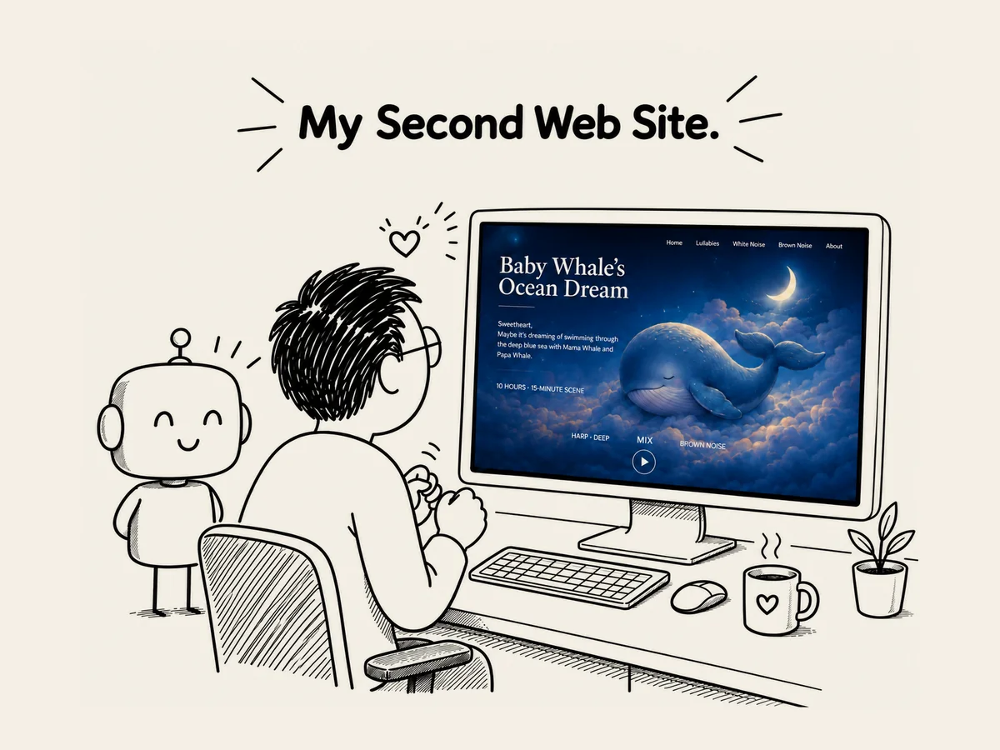

26.
Abrí mi segundo sitio web solo 17 días después.
Abrí mi segundo sitio web
solo 17 días después de haber abierto el primero.
BabySweetDreams.com.
Tenía mucho más contenido
y muchas más funciones que el primero.
Personajes que podrían aparecer
en los sueños de un bebé,
canciones de cuna,
ruidos para ayudar a dormir...
Había mucho más que hacer.
13 personajes.
Ilustraciones.
Movimiento.
Canciones de cuna.
Ruido.
Controles personalizados de imagen y sonido.
...
Y aun así,
lo hice más rápido de lo que esperaba.
¿Cómo había sido posible?
No creo que la IA
se hubiera vuelto de repente muchísimo más inteligente
en solo 17 días.
Yo había cambiado un poco.
Cuando creaba el primer sitio,
cada vez que aparecía algo que no conocía,
quería entenderlo.
¿Qué es esto?
¿Por qué se hace así?
¿Cómo funciona?
Con el segundo,
ya no hacía tantas preguntas.
Si no necesitaba saber algo,
simplemente lo dejaba pasar.
Solo tomaba las decisiones
que tenía que tomar.
Empecé a trabajar con la IA
en varios frentes a la vez.
Por un lado,
planificaba con ChatGPT.
Por otro,
les hacía las mismas preguntas
a otras IA.
Codex revisaba los archivos
y trabajaba directamente con ellos.
Ya no terminaba una tarea
antes de empezar la siguiente.
Empecé a hacer varias cosas
al mismo tiempo.
Los contenidos largos
los pasaba como TEXT.
Los datos complejos
los reunía en un solo archivo de Excel.
Las tareas repetitivas
las convertía en programas.
También hacía que la IA
revisara varias cosas de una vez.
Mientras creaba mi primer sitio web,
yo iba detrás de la IA.
Con el segundo,
empezaba a entender poco a poco
cómo usarla.
Claro,
todavía hay muchísimo
que no sé.
Pero ahora,
ya no me da tanto miedo.
